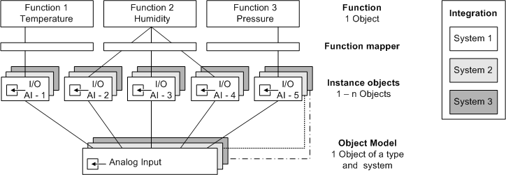

Mapping a Function to an Object Model
Instantiated objects for individual subsystems are always related to an Object Model and a Function. This concept ensures that the user experiences the same operating and monitoring philosophy for the same or similar Functions.

Another benefit of Function is that the same operating philosophy is used for new as well as existing systems and extensions or replacements of parts of a plant. As a result, operators do not need to learn a new operating philosophy. This increases the operational safety of your plant.

Desigo CC permits assigning an instantiated object directly to an Object Model. You should, however, continue to use Function from an operational viewpoint relating to maintaining the value of a system. When replacing or extending a plant, the new system can easily be mapped to the corresponding Function without having to create new mappings. Furthermore, the old and new system can be operated using the same philosophy.